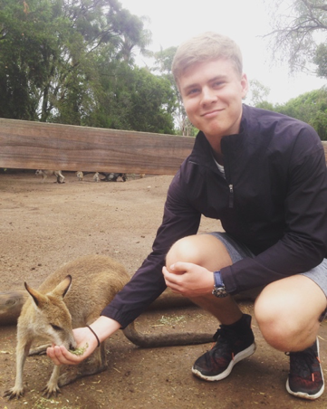

Dette hedder et paragraph det lavet man ved at lave p og krokodille mund udenom. Jeg lærer om HTML.5 og CSS.
vi bruger en håndfuld forskellige platformer til at lære om kodning. Her kan jeg f.eks. lave en (unordered list) ul som sætter de forskellige sites i punktform:
Nu vil jeg lave en liste (ordered liste) ol over links til minde sociale medier og dertil bruge (breaks) br. Så jeg får mere linje afstand.
Jeg overføre nogle billeder af mig selv til siden: det gør jeg ved at lave en img src="billede" og så et alt="der beskriver billedet"
Nu vil jeg prøve at lave et table
| Fornavn | Efternavn | Alder |
|---|---|---|
| Asger Emil | Neidhardt | 19 år gammel |
| Signe Emilie | Neidhardt | 14 år gammel |
dette table er blevet stylet på diverse måder i CSS.